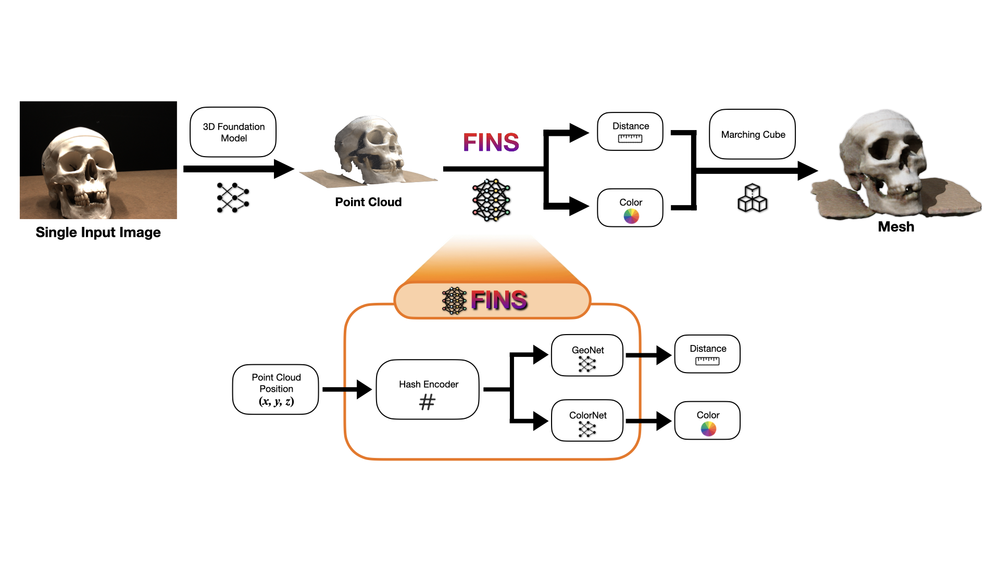
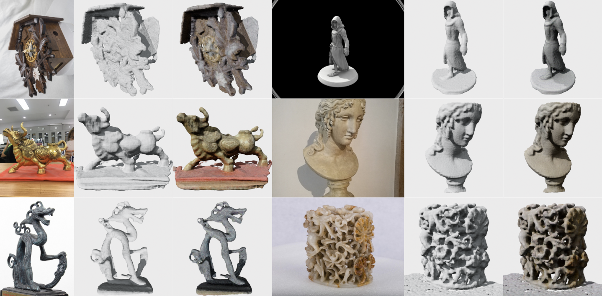
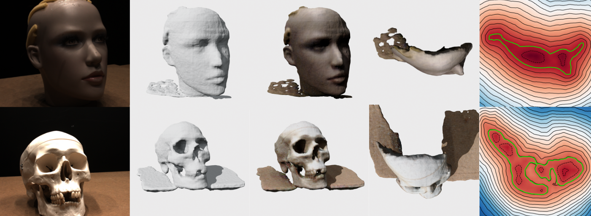
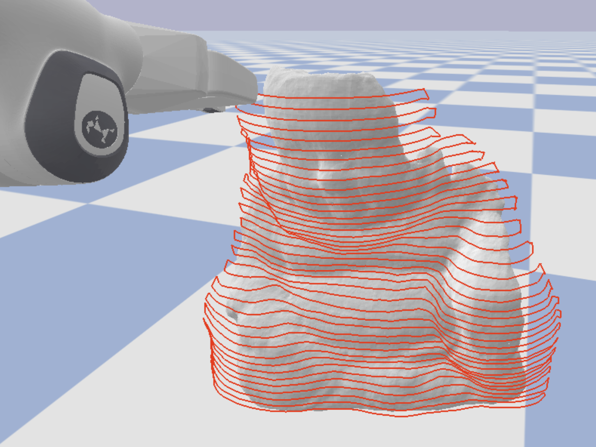
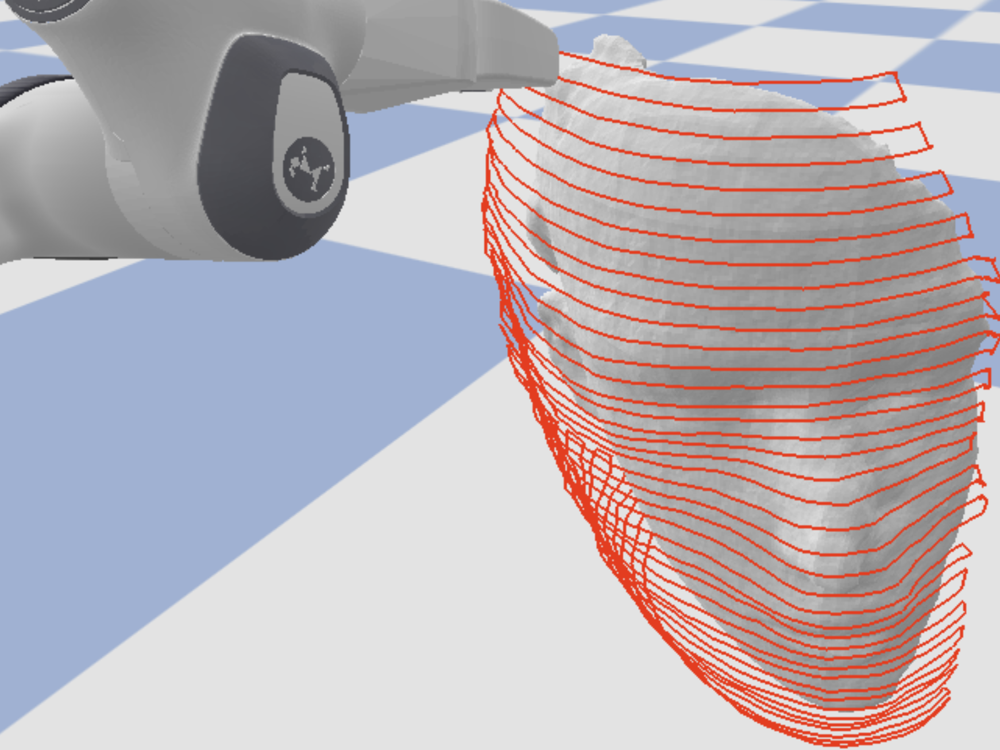
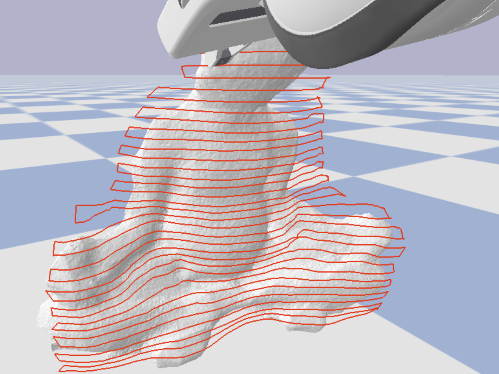

FINS: Fast Image-to-Neural Surface


Abstract
We present Fast Image-to-Neural Surface (FINS), a lightweight framework for reconstructing high-fidelity implicit surfaces and signed distance fields (SDFs) from a single image or sparse image set. Unlike prior neural implicit methods that require dense multi-view supervision and long optimization times, FINS converges within seconds by combining multi-resolution hash grid encoding, lightweight geometry and color heads, and approximate second-order optimization. By leveraging pre-trained 3D foundation models to lift 2D observations into 3D point clouds, FINS enables accurate and efficient SDF supervision from minimal visual input. We demonstrate superior convergence speed and reconstruction accuracy compared to state-of-the-art baselines, and validate its applicability in robotic surface following and motion planning tasks.
Motivation
Signed Distance Fields (SDFs) are widely used in robotics for collision avoidance, motion planning, and continuous surface interaction. However, existing neural implicit surface reconstruction methods typically:
- Require dense multi-view images
- Take minutes to hours to converge
- Are unsuitable for real-time robotic deployment
FINS addresses these limitations by enabling real-time, single-image SDF reconstruction.
Method Overview

Key Components
- 3D Foundation Model Initialization: Uses DUSt3R or VGGT to generate dense point clouds from single-view input.
- Multi-Resolution Hash Grid Encoding: Efficiently encodes spatial coordinates with constant memory complexity.
- Lightweight Geometry & Color Heads: Compact MLPs for rapid SDF and appearance regression.
- Approximate Second-Order Optimization (K-FAC): Accelerates convergence and stabilizes implicit field training.
Results


FINS converges within ~10 seconds on consumer-grade GPUs and outperforms multi-view baselines in both surface accuracy and SDF quality.
Robotics Applications



The learned SDF representation enables:
- Continuous collision checking
- Surface tracing
- Real-time path planning
BibTeX
@misc{chu2025fins,
title = {Efficient Construction of Implicit Surface Models From a Single Image for Motion Generation},
author = {Wei-Teng Chu and Tianyi Zhang and Matthew Johnson-Roberson and Weiming Zhi},
year = {2025},
eprint = {2509.20681},
archivePrefix = {arXiv},
primaryClass = {cs.RO},
url = {https://arxiv.org/abs/2509.20681},
}